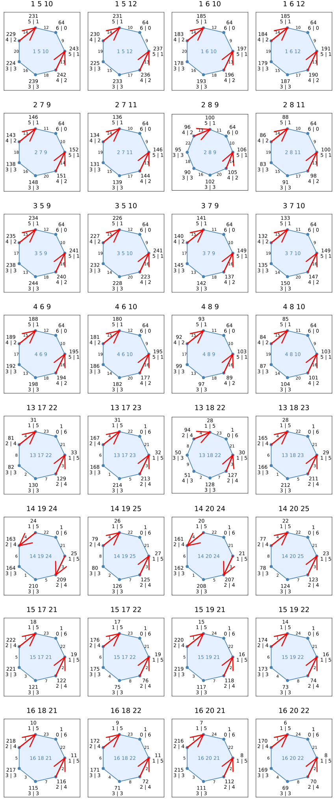
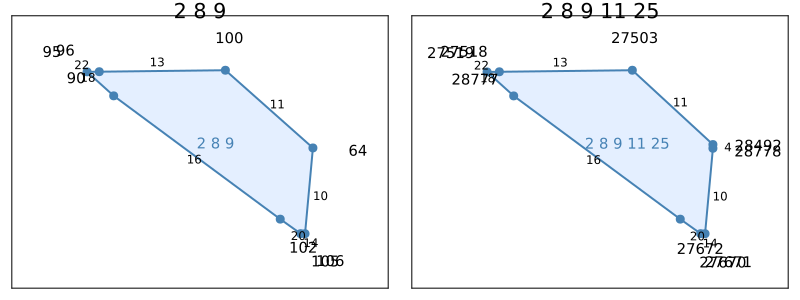
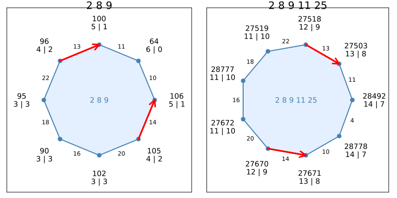

Spindles and the Hirsch Conjecture II

In this tutorial, we will be analyzing the lowest-dimensional counterexample to the (bounded) Hirsch conjecture known to date. It is a spindle with 40 facets in dimension 20 that is constructed from a 5-dimensional "base" spindle found by Matschke, Santos, and Weibel. Following the terminology of part I of this tutorial, our goal is to find good 2-faces.
This example is also available as a Jupyter notebook. Click on the badge above to view it in nbviewer.
Dimension 5
To begin, let us enumerate the good 2-faces of the 5-dimensional spindle.
using Spindles
A, b, _ = readineq("../../../examples/s-25-5.txt", BigInt)
s = Spindle(A, b)Spindle{Rational{BigInt}}We created the spindle s from rational data with numerators and denominators of type BigInt (this is the second argument passed to readineq). Choosing Int here (as in part I of this tutorial) would have produced an integer overflow error. See also the section on arbitrary-precision arithmetic in the Julia language documentation.
The following code finds all good 2-faces of s.
goodfaces = []
for f in sort(facesofdim(s, 2))
fstate = isgood2face(s, f)
if fstate.good
push!(goodfaces, fstate)
end
end
length(goodfaces)32Next, let's plot the graph of each of those 32 good 2-faces:
using Plots
plot_arr = []
for fstate in goodfaces
push!(plot_arr,
plot2face(s, fstate.facets; showdist=true, directed_edges=fstate.edges)
)
end
ncols = 4
nrows = ceil(Int, length(plot_arr) / ncols)
plot(plot_arr..., layout=(nrows, ncols), size=(1000, nrows*300));This produces the following figure.

Dimension 20
Warm-up: Patterns in the inequality description
Let us first take a look at the inequality description of the 20-dimensional spindle. A minimal description is provided in the file s-25.txt. Its contents are as follows:
print(read("../../../examples/s-25.txt", String))# 20-dimensional spindle with 40 facets and length 21
# due to Matschke, Santos, and Weibel (see Table 1 in https://arxiv.org/abs/1202.4701)
3 1 -1 0 0 -21 7 0 0 0 0 0 0 0 0 0 0 -1 -1 0 0 0
7 1 -1 0 0 -16 15 0 0 0 0 0 0 0 0 0 0 0 -1 -1 0 0
2 1 -1 0 0 0 32 0 0 0 0 0 0 0 0 0 0 0 0 -1 -1 0
8 1 -1 0 0 16 15 0 0 0 0 0 0 0 0 0 0 0 0 0 -1 -1
4 1 -1 0 0 21 7 0 0 0 0 0 0 0 0 0 0 0 0 0 0 0
6 1 -1 0 0 20 4 0 0 0 0 0 0 0 0 0 0 0 0 0 0 -1
1 1 -1 0 0 0 -32 0 0 0 0 0 0 0 0 0 0 0 0 0 0 0
5 1 -1 0 0 -20 4 0 0 0 0 0 0 0 0 0 0 0 0 0 0 0
9 1 -1 -3/50 1/25 0 30 0 0 0 0 0 0 0 0 0 0 0 0 0 0 0
10 1 -1 3/50 1/25 0 -30 0 0 0 0 0 0 0 0 0 0 0 0 0 0 0
12 1 -1 3/1000 -7/1000 0 -159/5 0 0 0 0 0 0 0 0 0 -1 0 0 0 0 0
11 1 -1 -3/1000 -7/1000 0 159/5 -10000000 -10000000 -10000000 -10000000000 -100000000000 -100000000000 -100000000000 -100000000000 -1 0 0 0 0 0 0
11 1 -1 -3/1000 -7/1000 0 159/5 10000000 0 0 0 0 0 0 0 -1 0 0 0 0 0 0
11 1 -1 -3/1000 -7/1000 0 159/5 -10000000 10000000 0 0 0 0 0 0 -1 0 0 0 0 0 0
11 1 -1 -3/1000 -7/1000 0 159/5 -10000000 -10000000 10000000 0 0 0 0 0 -1 0 0 0 0 0 0
11 1 -1 -3/1000 -7/1000 0 159/5 -10000000 -10000000 -10000000 10000000000 0 0 0 0 -1 0 0 0 0 0 0
11 1 -1 -3/1000 -7/1000 0 159/5 -10000000 -10000000 -10000000 -10000000000 100000000000 0 0 0 -1 0 0 0 0 0 0
11 1 -1 -3/1000 -7/1000 0 159/5 -10000000 -10000000 -10000000 -10000000000 -100000000000 100000000000 0 0 -1 0 0 0 0 0 0
11 1 -1 -3/1000 -7/1000 0 159/5 -10000000 -10000000 -10000000 -10000000000 -100000000000 -100000000000 100000000000 0 -1 0 0 0 0 0 0
11 1 -1 -3/1000 -7/1000 0 159/5 -10000000 -10000000 -10000000 -10000000000 -100000000000 -100000000000 -100000000000 100000000000 -1 0 0 0 0 0 0
13 1 1 -60 0 0 0 0 0 -1 -1 0 0 0 0 0 0 0 0 0 0 0
18 1 1 -8 30 0 0 0 0 0 -1 -1 0 0 0 0 0 0 0 0 0 0
16 1 1 0 33 0 0 0 0 0 0 -1 -1 0 0 0 0 0 0 0 0 0
20 1 1 2 32 0 0 0 0 0 0 0 -1 -1 0 0 0 0 0 0 0 0
14 1 1 55 0 0 0 0 0 0 0 0 0 -1 -1 0 0 0 0 0 0 0
19 1 1 34 -36 0 0 0 0 0 0 0 0 0 -1 0 0 0 0 0 0 0
15 1 1 0 -76 0 0 0 0 0 0 0 0 0 0 0 0 0 0 0 0 0
17 1 1 -44 -34 0 0 0 0 0 0 0 0 0 0 0 0 0 0 0 0 0
21 1 1 20 0 -1/5 1/5 0 0 0 0 0 0 0 0 0 0 0 0 0 0 0
22 1 1 -2999/50 0 3/25 1/5 0 0 -1 0 0 0 0 0 0 0 0 0 0 0 0
23 1 1 -299999/5000 0 0 -1/100 0 -1 0 0 0 0 0 0 0 0 0 0 0 0 0
24 1 1 549/10 0 -1/5000 -1/800 -1 0 0 0 0 0 0 0 0 0 0 0 0 0 0
25 1 1 54 0 -1/500 1/80 0 0 0 0 0 0 0 0 -100000 -10000000 -10000000 -10000000 -100000000 -100000000 -1000000000
25 1 1 54 0 -1/500 1/80 0 0 0 0 0 0 0 0 100000 0 0 0 0 0 0
25 1 1 54 0 -1/500 1/80 0 0 0 0 0 0 0 0 -100000 10000000 0 0 0 0 0
25 1 1 54 0 -1/500 1/80 0 0 0 0 0 0 0 0 -100000 -10000000 10000000 0 0 0 0
25 1 1 54 0 -1/500 1/80 0 0 0 0 0 0 0 0 -100000 -10000000 -10000000 10000000 0 0 0
25 1 1 54 0 -1/500 1/80 0 0 0 0 0 0 0 0 -100000 -10000000 -10000000 -10000000 100000000 0 0
25 1 1 54 0 -1/500 1/80 0 0 0 0 0 0 0 0 -100000 -10000000 -10000000 -10000000 -100000000 100000000 0
25 1 1 54 0 -1/500 1/80 0 0 0 0 0 0 0 0 -100000 -10000000 -10000000 -10000000 -100000000 -100000000 1000000000You may notice that the coefficients in the first couple of columns are very similar to those of A, the coefficient matrix of the 5-dimensional "base" spindle s. This similarity is no coincidence: the matrix encoded in the file above is derived from A in a highly structured way. Each row has a "counterpart" in A. For convenience, each row above is already labeled by the index of its "counterpart". For example, the labels of the first three rows (the numbers in the first column) are
[3, 7, 2]3-element Vector{Int64}:
3
7
2and the corresponding rows of A are
A[[3, 7, 2],:]3×5 Matrix{Rational{BigInt}}:
1 0 0 21 -7
1 0 0 16 -15
1 0 0 0 -32If you inspect those row labels closely, you may notice a pattern. Two labels appear multiple times, namely 11 and 25. The corresponding rows of A have been "replicated" a number of times. Each time, a new nonzero entry is added to the right whose order of magnitude is much larger than that of all other coefficients. At the polyhedral level, this "replication" of rows is reflected by an operation called wedging, which plays a crucial role in Santos' construction of a Hirsch counterexample from spindles like s.
The structure that we just observed will be extremely useful in "guessing" good 2-faces of the 20-dimensional spindle encoded in the file above. Before we examine its faces, let us first read the file and construct a Spindle object from it.
Building the spindle
A20, b20, labels = readineq("../../../examples/s-25.txt", BigInt)
s20 = Spindle(A20, b20)
collect(vertices(s20))[apices(s20)]2-element Vector{Vector{Rational{BigInt}}}:
[-1, 0, 0, 0, 0, 0, 0, 0, 0, 0, 0, 0, 0, 0, 0, 0, 0, 0, 0, 0]
[1, 0, 0, 0, 0, 0, 0, 0, 0, 0, 0, 0, 0, 0, 0, 0, 0, 0, 0, 0]Note that s20 is simple:
using Graphs: degree
all(degree(graph(s20)) .== dim(s20))trueIts most important property, however, is the length of a shortest path between the apices:
dist(s20, apices(s20)...)21The Hirsch conjecture would imply that there must be a strictly shorter path, namely of length 20. Therefore, s20 is a counterexample to the Hirsch conjecture.
You may have noticed that computations in dimension 20 take longer than they did in dimension 5. Calling graph or dist for the first time on s20 (or any Spindles function that needs the graph, in fact) triggers the computation of the entire graph of s20. Luckily, we don't have to enumerate all 2-faces of s20 to identify good ones. Instead, we may take advantage of the structure in its coefficient matrix to "guess" good 2-faces.
Guessing good 2-faces
For example, here is one of the good 2-faces of s again:
face = [2,8,9]
isgood2face(s, face).goodtrueThe corresponding facets of s20 are
face20 = [i for (i,label) in enumerate(labels) if parse(Int, label) in face]3-element Vector{Int64}:
3
4
9However, three facets do not make a 2-face in dimension 20 yet. We need another 15 facet-defining inequalities from the description of s20. With some geometric intuition of what the wedging operation does, we propose the following rule of thumb: To get up to 18 facets, pick facets from those two blocks of "replications" labeled 11 and 25. Specifically, from each block, pick all facets but one. Let us calculate the number of facets in each block:
sum(labels .== "11"), sum(labels .== "25")(9, 8)So, in total, our proposed rule of thumb would indeed give us the desired number of $9+8-2=15$ facets. Let us "validate" this rule on face.
blocks = [findall(labels .== ref) for ref in ["11", "25"]] # all row indices in one of the two blocks
face20 = [face20; blocks[1][2:end]; blocks[2][2:end]]
join(unique(labels[face20]), " ")"2 8 9 11 25"This is the face we would expect to be a good 2-face. Let us check whether it is:
isgood2face(s20, face20).goodtrueGreat! By omitting the first facet from each block, we immediately found a good 2-face of s20. Let us plot this face and the original face face side by side.
plot(
plot2face(s, face; usecoordinates=true),
plot2face(s20, face20; usecoordinates=true, facetlabels=labels),
layout=grid(1,2), size=(800,300)
)The output is

Not only do their projections look very similar, they are also combinatorially almost identical:
edges = isgood2face(s, face).edges
edges20 = isgood2face(s20, face20).edges
plot(
plot2face(s, face; directed_edges=edges, showdist=true),
plot2face(s20, face20; directed_edges=edges20, showdist=true, facetlabels=labels),
layout=grid(1,2), size=(800,400)
)Now the output is

The figure on the right is the graph of the 2-face in dimension 20, with facets labeled by which facets of the 5-dimensional spindle s they correspond to. Combinatorially, the only change is an additional edge (the one defined by 4). Most importantly, however, the property of being good is preserved.
Let us take this one step further and find such a good 2-face in dimension 20 for each of the good 2-faces of s.
This page was generated using Literate.jl.